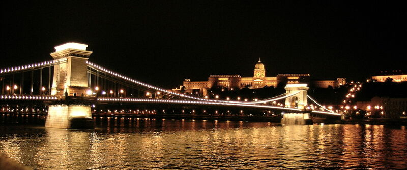
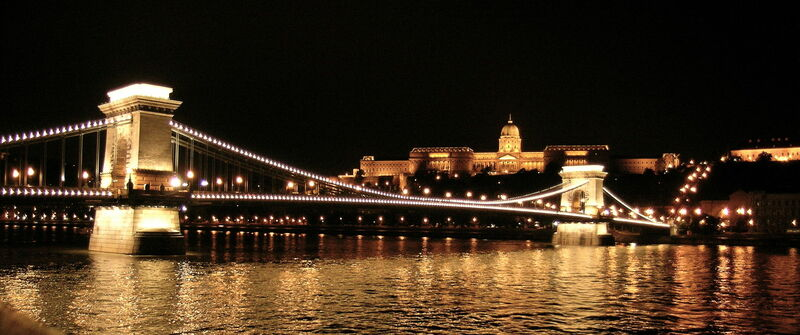

Széchenyi István
Széchenyi István (1791 – 1860) politikus, író, polihisztor, közgazdász, a Batthyány-kormány közlekedési minisztere, „a legnagyobb magyar” . Eszméi, hatása és gyakorlati tevékenysége által a modern Magyarország egyik megteremtője.
 

Hatása
Eszméit tartalmazó könyvei, a Hitel, a Világ és a Stádium óriási hatást gyakoroltak kora szellemi megújításában.
Számos intézmény alapítója és névadója, az ipar és gazdaság fejlődésében fontos részvénytársaságok megalapítója.
A korszerű bortermelés, lisztgyártás, a selyemhernyó-tenyésztés, a cukorgyártás, a gázvilágítás, az országos vasútfejlesztés egyik előmozdítója.